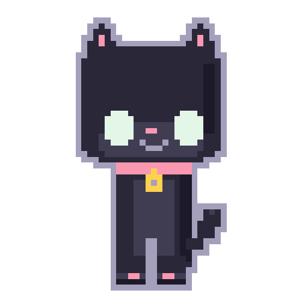

Pao
A cozy pixel cat that lives on your desktop and reacts to how you work — kneads while you type, chases your cursor, purrs when you pet it. Runs entirely on your machine.
Free
No account
Runs 100% locally — no AI, no tracking
First time opening on Mac? (one-time step)
Pao isn't notarized by Apple yet, so macOS will warn you the first time. This is expected — here's how to open it:
- Unzip / mount the download, then right-click (or Control-click) the Pao app icon.
- Choose Open from the menu.
- Click Open again in the dialog that appears.
You only need to do this once — after that it opens normally.
First time opening on Windows? (one-time step)
Pao isn't code-signed yet, so Windows SmartScreen may warn you. Here's how to continue:
- Click More info on the SmartScreen popup.
- Click Run anyway.